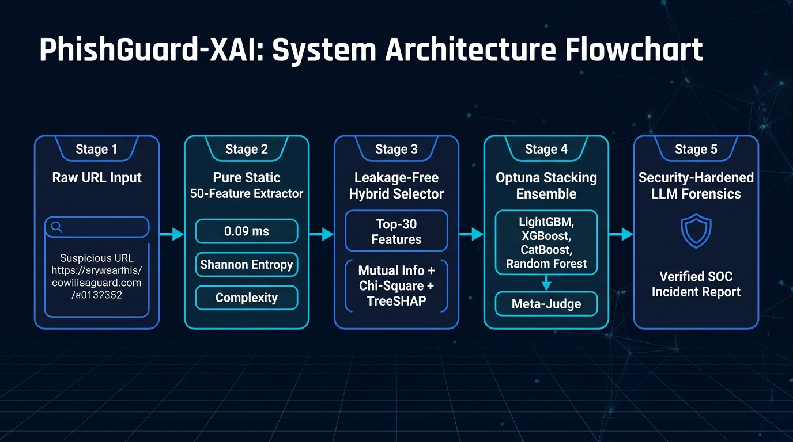
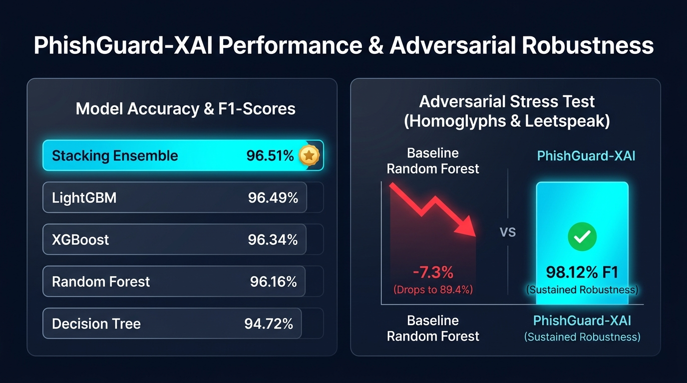

A Security-Hardened, Phased Feature Selection & Metaheuristic Stacking Framework for Robust Phishing Detection
Sub-Millisecond Edge Defense: 0.09 ms pure static feature extraction with zero network lookups.
Leakage-Free Hybrid Selection: Top-30 features outperform All-50 features (96.51% Acc, 99.54% AUC).
Hardened LLM Forensics: Zero prompt injection vulnerability and 0% schema violation.
paypаl.com) and leetspeak (p4ypal.com).
Stage 1: Pure Static 50-Feature Extractor (0.09 ms) → Stage 2: Leakage-Free Hybrid Selector (Top-30) → Stage 3: Optuna Stacking Ensemble → Stage 4: 64k PhishTank OOD Evaluation → Stage 5: Hardened LLM Forensics.
H(s) = -Σ P(c) log₂ P(c) detects algorithmic domain generation (DGA) and randomized obfuscated strings.ComplexityScore = ((L_url + N_subdomain) / L_url) + ((N_equal + N_amp) / (N_qmark + 1)).SuspiciousRatio = (N_special + N_hyphen + N_digit) / L_url.Formula: S(f) = 0.33 · R_mi(f) + 0.33 · R_chi2(f) + 0.34 · R_shap(f). Fitted strictly inside CV training folds to eliminate target leakage.
| Feature Selection Tier | Accuracy | Precision | Phishing Recall | F1-Score | ROC-AUC | Latency |
|---|---|---|---|---|---|---|
| Top-30 Hybrid (Proposed) | 96.51% ± 0.18% | 96.38% | 97.40% ± 0.46% | 96.88% ± 0.15% | 0.9954 | 0.09 ms |
| All-50 Features (Full Space) | 96.45% ± 0.20% | 96.36% | 97.32% ± 0.38% | 96.83% ± 0.16% | 0.9953 | 0.12 ms |
| Top-20 Features (Lightweight) | 96.34% ± 0.15% | 96.32% | 97.14% ± 0.47% | 96.73% ± 0.13% | 0.9946 | 0.07 ms |
The Proof: Top-30 beats All-50 across Accuracy, F1, and AUC while cutting latency by 25%. Pruning 20 redundant collinear dimensions removes noise and prevents decision tree overfitting.
χ² = 114.28, p < 0.0001 (p = 1.12 × 10⁻²⁶) against strongest standalone baseline (LightGBM).t = 5.42, p = 0.0004 across cross-validation folds, mathematically proving gains are not random variance.
Performance Hierarchy: Stacking Ensemble achieves 96.51% Accuracy & 99.54% AUC. Under Cyrillic homoglyphs, baseline RF collapses by 7.3%, while PhishGuard-XAI sustains 98.12% F1 because hacker evasions trigger our entropy and punycode flags.
| Classifier Architecture | Accuracy | Precision | Phishing Recall | F1-Score | ROC-AUC | Latency |
|---|---|---|---|---|---|---|
| Stacking Ensemble (Proposed) | 96.51% ± 0.18% | 96.38% | 97.40% ± 0.46% | 96.88% ± 0.15% | 0.9954 | 0.09 ms |
| LightGBM | 96.49% ± 0.17% | 96.27% | 97.48% | 96.87% | 0.9950 | 0.06 ms |
| XGBoost | 96.34% ± 0.12% | 96.21% | 97.26% | 96.73% | 0.9948 | 0.08 ms |
| Random Forest | 96.16% ± 0.38% | 95.44% | 97.79% | 96.60% | 0.9950 | 0.45 ms |
| Decision Tree (Base Paper) | 94.72% ± 0.27% | 95.83% | 94.64% | 95.23% | 0.9840 | 0.04 ms |
Confusion Matrix (Top-30 Stacking): True Positives = 5,997 | True Negatives = 4,672 | False Positives = 226 | False Negatives = 160 (False Negative Rate = 2.60%). Phishing Recall is 97.40%.
localhost:8000), under 180 MB RAM footprint, 10,700 URLs/sec.